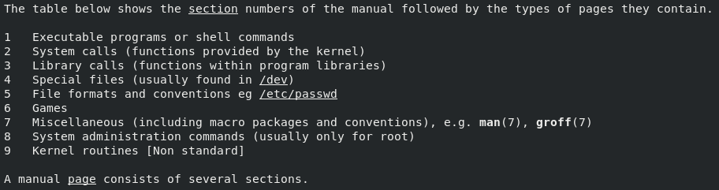

第四章 在红帽企业Linux中获取帮助
目标：
- 通过利用本地帮助系统来解决问题。
章节：
- 阅读man page
- 阅读info文档
第一节：阅读man page
目标：
- 完成本节后，学生应该能在本地Linux系统man page中查找信息。
介绍man命令：
- 本地的帮助文档来源之一成为man pages，这些手册随软件安装，可以使用man命令进行查询。
- man page源自Linux程序员手册，该手册篇幅很长，足以打印成多个章节。
- 每个章节中都包含关特定主题的信息。
- $ man man：查看man命令的使用方法


- 为区分不同章节，man page在主题后附上了章节编号（用括号括起）。
如，passwd(1)介绍更改密码的命令，而 passwd(5)说明用于存储本地用户账户的/etc/passwd文件格式。
- 使用man <topic>读取man page，内容一次显示一个屏幕。
- man命令按照数字顺序搜索。
如，man passwd默认显示passwd(1)。
- 要显示要具体章节的man page主题，需带上章节编号参数，如man 5 passwd显示passwd(5)。
MAN PAGES导航与搜索：
- 需要在man page中掌握浏览技能非常重要。
- $ man libc：查看Linux C函数库概况
$ man 2 syscalls：查看Linux系统调用列表
$ man 7 regex：查看POSIX的正则表达式使用方法
$ man intro：用户命令使用方法介绍


使用关键字搜索MAN PAGES：
- $ man -k <keyword>：对man page执行关键字搜索（只搜索man page的NAME）

- 常用的系统管理主题在第1节（用户命令）、第5节（文件格式）和第8节（管理命令）中。
- $ man -K <keyword>：执行全文本页面搜索（搜索整页man page）

- 全文搜索使用更多系统资源，耗费更多时间。
- man的数据库由root运行mandb命令生成，系统计划任务cron.daily也会每天运行。
练习 P106：READING MANUAL PAGES
第二节：阅读info文档
目标：
- 完成本节后，学生应该能从GNU Info的本地文档中查找信息。
GNU INFO简介：
- man page的格式作为命令参考时很有用，但作为普通文档却用处不大。
- GNU项目开发了一种不同的在线文档系统，称为GNU Info。
- man page的格式更为正式，内容通常记录的是软件包中的特定命令或功能，而且采用独立
文本文件的结构。
- Info文档则通常涵盖整个特定的软件包，其内容往往是有关如何使用软件的更为实用的示例，
而且采用了超链接结构。
- 通常而言，Info文档是一种综合性的文档，其内容较man page更加深入。
阅读Info文档：
- $ pinfo <topic>：浏览特定主题，pinfo命令将在顶层目录中打开。

- Info文档对于man page提供以下改进：
1. 针对大型系统的单个文档，包含该系统的所有必要信息。
2. 超链接
3. 完整的可浏览文档索引
4. 全文搜索整个文档
- 一些命令或实用程序可同时具有man page与info文档。
- pinfo阅读器比原始的info命令更加高级。
- 安装了对应的软件包后， pinfo中会提供新的文档。
- 如果系统中没有所请求的特定条目的Info主题，Info将会改为查找匹配的man page，
并返回相应内容。
* 注意：
1. pinfo命令使用示例：左右箭头进入与返回
$ pinfo libc：查看Linux C函数库概述，如搜索Signal（/Signal）可查看Linux信号相关信息。
练习 P113：READING INFO DOCUMENTATION
Lab P116：GETTING HELP IN RED HAT ENTERPRISE LINUX